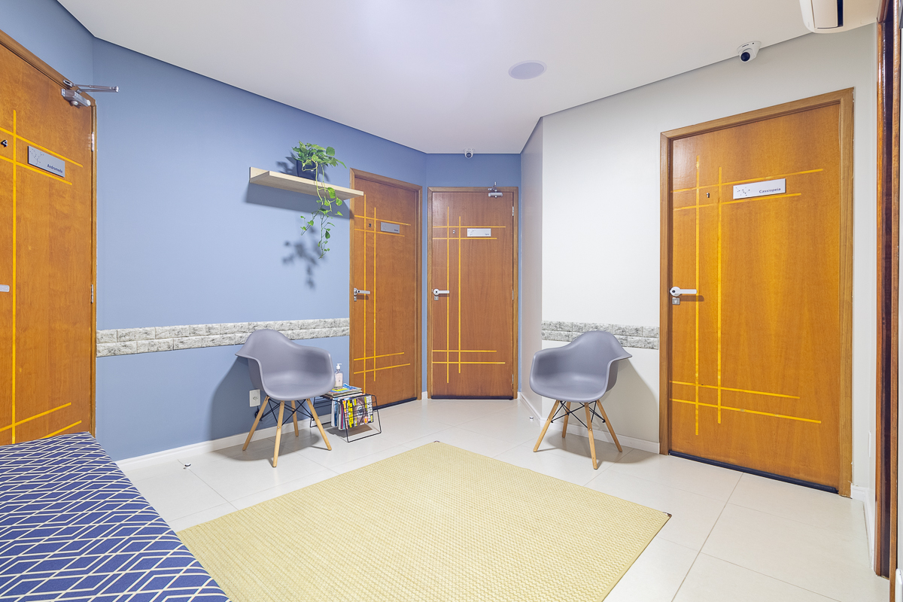
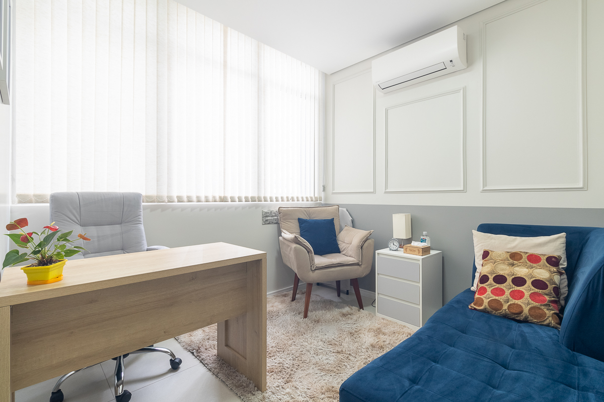
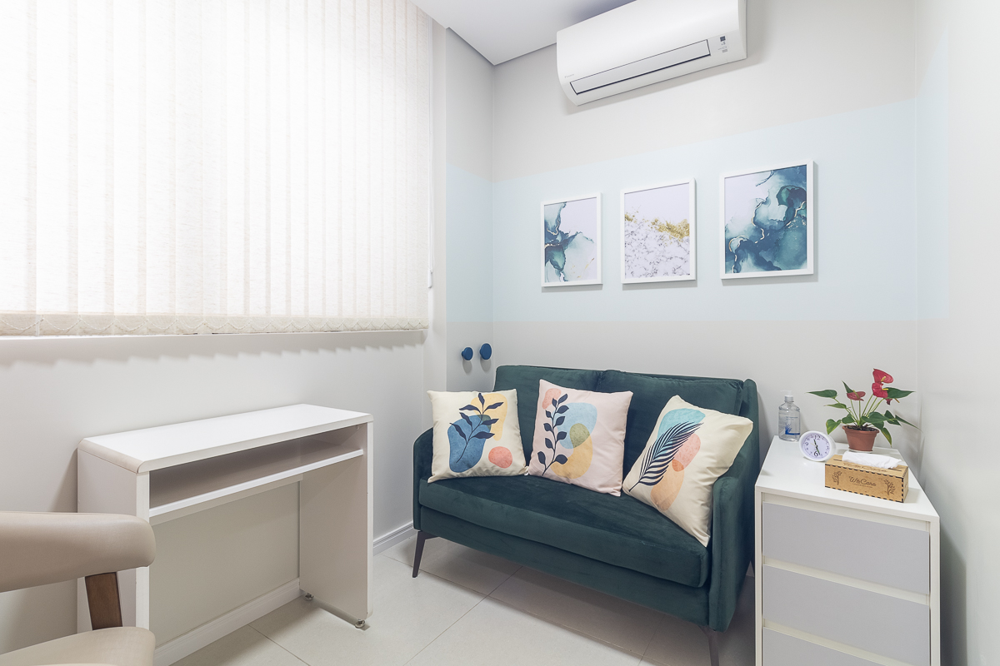
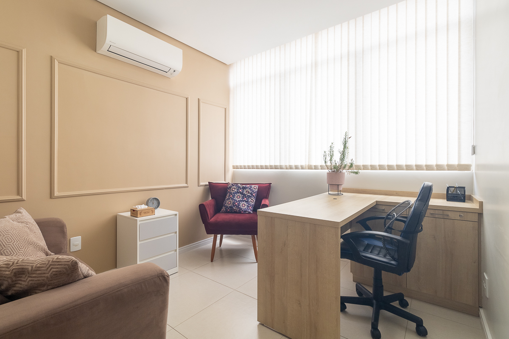
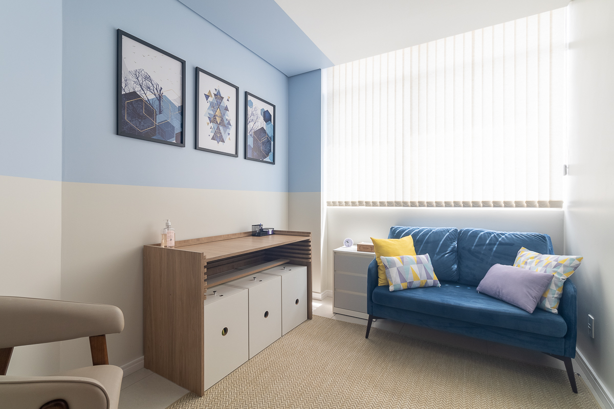

traga a harmonia em sua familia através da terapia familiar
Olá, sou Mary Tomasine, terapeuta familiar. Meu objetivo é ajudar famílias a superar desafios e fortalecer seus laços através da terapia familiar. Com atendimento online e presencial na região de Santo André, estou aqui para apoiar você e sua família em sua jornada de crescimento e harmonia.
Agende uma consulta via WhatsAppSobre Mary Tomasine
Missão e valor
Sou a filha mais velha, esposa e mãe de um casal de jovens. Atuo na área da saúde há mais de 20 anos e, ao longo dessa trajetória, busquei múltiplas formações que ampliaram minha visão sobre o cuidado com o ser humano. Hoje, meu maior propósito é contribuir para a restauração de famílias, ajudando pessoas a reconstruírem vínculos, fortalecerem sua identidade e viverem relacionamentos mais saudáveis.
Formação e Especialização
Especialista em mediação de conflitos familiares e pessoas em sofrimento. Meu trabalho tem como objetivo ajudar as pessoas a desenvolverem maior clareza emocional, equilíbrio diante das demandas da vida e estratégias práticas para melhorar o bem-estar e o desempenho pessoal.
Saiba como posso te ajudar
Conheça as areas que atuo para suporte psicológico

Terapia Individual
Seção de terapia feita de um para um, onde a assistencia será totalmente voltada somente a você

Terapia de Casal
Seção de terapia feita para a mediação de conflitos entre o casal, onde a assistência será totalmente voltada somente a vocês
Terapia Familiar
Seção de terapia feita para a mediação de conflitos dentro da família, onde a assistência será totalmente voltada a família
Formas de atendimento
Saiba como podemos fazer seu atendimento
Atendimento Online
Seção de terapia feita de um para um, onde a assistencia será totalmente voltada somente a você de forma online, feita via plataforma segura e confiável da sua casa.
Atendimento Presencial
Seção de terapia feita para a mediação de conflitos entre o casal, onde a assistência será totalmente voltada somente a vocês
Consultorio Espaço Wecare - Santo André
Av. Portugal, 397— Centro, Santo André/SP
Ambiente profissional e confortável, com fácil acesso ao ABC Paulista





Depoimentos
O que nossos clientes dizem sobre nosso trabalho
Eventos realizados
Conheça os eventos que já participei
Dúvidas Frequentes
Perguntas frequentes sobre nossos serviços e atendimento
Vocês atendem por convênio?
Como é a primeira sessão?
Agendamento e Pagamento
Não. Realizamos apenas atendimento particular para garantir maior qualidade e personalização.
É uma conversa inicial tranquila onde entendemos seu momento atual e definimos juntos os objetivos.
Agendamento pode ser feito diretamente pelo WhatsApp ou pelo App Calendly. Após agendamento, o pagamento deve ser realizado antes do início do atendimento podendo ser feito por pix ou cartão de crédito .